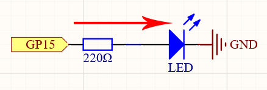

Note
Hello, welcome to the SunFounder Raspberry Pi & Arduino & ESP32 Enthusiasts Community on Facebook! Dive deeper into Raspberry Pi, Arduino, and ESP32 with fellow enthusiasts.
Why Join?
Expert Support: Solve post-sale issues and technical challenges with help from our community and team.
Learn & Share: Exchange tips and tutorials to enhance your skills.
Exclusive Previews: Get early access to new product announcements and sneak peeks.
Special Discounts: Enjoy exclusive discounts on our newest products.
Festive Promotions and Giveaways: Take part in giveaways and holiday promotions.
👉 Ready to explore and create with us? Click [here] and join today!
2.1 Hello, LED!¶
Just as printing “Hello, world!” is the first step in learning to program, using a program to drive an LED is the traditional introduction to learning physical programming.
Schematic

This circuit works on a simple principle, and the current direction is shown in the figure. The LED will light up after the 220ohm current limiting resistor when GP15 outputs high level (3.3v). The LED will turn off when GP15 outputs low level (0v).
Wiring
{kind=link}
To build the circuit, let’s follow the current’s direction!
The LED is powered by the GP15 pin of the Pico board, and the circuit begins here.
To protect the LED, the current must pass through a 220 ohm resistor. One end of the resistor should be inserted into the same row as the Pico GP15 pin (row 20 in my circuit), and the other end should be inserted into the free row of the breadboard (row 24).
Note
The color ring of the 220 ohm resistor is red, red, black, black and brown.
If you pick up the LED, you will see that one of its leads is longer than the other. Connect the longer lead to the same row as the resistor, and the shorter lead to the same row across the middle gap on the breadboard.
Note
The longer lead is the anode, which represents the positive side of the circuit; the shorter lead is the cathode, which represents the negative side.
The anode needs to be connected to the GPIO pin through a resistor; the cathode needs to be connected to the GND pin.
Using a male-to-male (M2M) jumper wire, connect the LED short pin to the breadboard’s negative power bus.
Connect the GND pin of Pico to the negative power bus using a jumper.
Code
Note
Open the
2.1_hello_led.pyfile under the path ofeuler-kit/micropythonor copy this code into Thonny, then click “Run Current Script” or simply press F5 to run it.Don’t forget to click on the “MicroPython (Raspberry Pi Pico)” interpreter in the bottom right corner.
For detailed tutorials, please refer to Open and Run Code Directly.
import machine
import utime
led = machine.Pin(15, machine.Pin.OUT)
while True:
led.value(1)
utime.sleep(2)
led.value(0)
utime.sleep(2)
After the code runs, you will see the LED blinking.
How it works?
The machine library is required to use GPIO.
import machine
The library contains all the instructions needed to communicate between MicroPython and Pico. In the absence of this line of code, we will not be able to control any GPIOs.
The next thing to notice is this line:
led = machine.Pin(15, machine.Pin.OUT)
The object led is defined here. Technically, it can be any name, such as x, y, banana, Michael_Jackson, or any character.
To ensure that the program is easy to read, it is best to use a name that describes the purpose.
In the second part of this line (the part after the equal sign), we call the Pin function found in the machine library. It is used to tell Pico’s GPIO pins what to do.
A Pin function has two parameters: the first (15) represents the pin to set;
The second parameter (machine.Pin.OUT) specifies that the pin should be output rather than input.
The above code has “set” the pin, but it will not light up the LED. To do this, we also need to “use” the pin.
led.value(1)
The GP15 pin has been set up previously and named led. The function of this statement is to set the value of led to 1 to turn the LED on.
All in all, to use GPIO, these steps are necessary:
import machine library: This is necessary, and it is only executed once.
Set GPIO: Before using, each pin should be set.
Use: Change the working state of the pin by assigning a value to it.
If we follow the above steps to write an example, then you will get code like this:
import machine
led = machine.Pin(15, machine.Pin.OUT)
led.value(1)
Run it and you will be able to light up the LED.
Next, we try to add the “extinguished” statement:
import machine
led = machine.Pin(15, machine.Pin.OUT)
led.value(1)
led.value(0)
Based on the code line, this program will turn on the LED first, then turn it off. But when you use it, you will find that this is not the case. There is no light coming from the LED. This is due to the very rapid execution speed between the two lines, much faster than the human eye can react. When the LED lights up, we don’t perceive the light instantly. This can be fixed by slowing down the program.
The second line of the program should contain the following statement:
import utime
Similarly to machine, the utime library is imported here, which handles all things time-related.
The delays we need to use are included in this. Add a delay statement between led.value(1) and led.value(0) and let them be separated by 2 seconds.
utime.sleep(2)
This is how the code should look now. We will see that the LED turns on first, then turns off when we run it:
import machine
import utime
led = machine.Pin(15, machine.Pin.OUT)
led.value(1)
utime.sleep(2)
led.value(0)
Finally, we should make the LED blink. Create a loop, rewrite the program, and it will be what you saw at the beginning of this chapter.
import machine
import utime
led = machine.Pin(15, machine.Pin.OUT)
while True:
led.value(1)
utime.sleep(2)
led.value(0)
utime.sleep(2)
Learn More
There will usually be an API (Application Programming Interface) file associated with the library. It contains all the information necessary to use this library, including detailed descriptions of functions, classes, return types, parameter types, etc.
In this article, we used MicroPython’s machine and utime libraries, we can find more ways to use them here.
Please read the API file to understand this example of making the LED blink!
Note
Open the
2.1_hello_led_2.pyfile under the path ofeuler-kit/micropythonor copy this code into Thonny, then click “Run Current Script” or simply press F5 to run it.Don’t forget to click on the “MicroPython (Raspberry Pi Pico)” interpreter in the bottom right corner.
For detailed tutorials, please refer to Open and Run Code Directly.
import machine
import utime
led = machine.Pin(15, machine.Pin.OUT)
while True:
led.toggle()
utime.sleep(1)